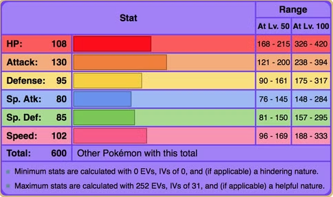
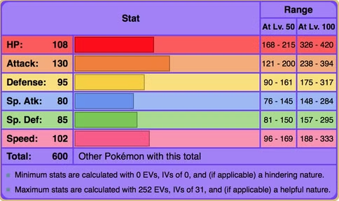

Garchomp
National dex entry #445
the "Mach Pokémon".
Garchomp is a ground & dragon type pseudo-legendary pokemon. first introduced in gen lV Garchomp was known for being fast and powerful.
 

Garchomp is renowned for its powerful STAB (Same-Type Attack Bonus) moves like Earthquake and Dragon Claw, along with support moves such as Swords Dance to boost its already high attack power.